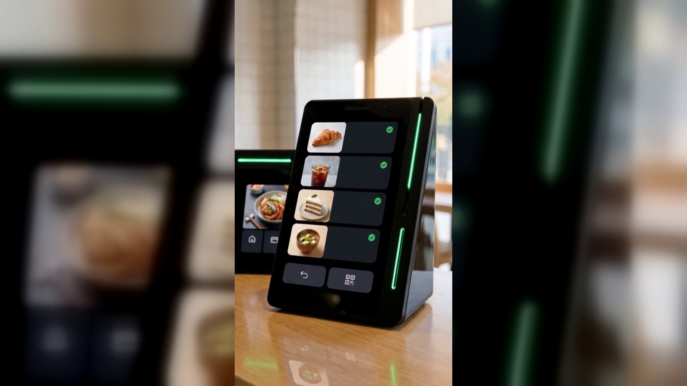

한 번 온 손님을 단골로 만드는 법 — 쿠폰은 결제 데이터가 고릅니다
결론부터 말씀드리면, 단골은 기억에서 나옵니다.
그 기억을 사람 대신 결제 데이터가 해 줍니다.
가게 매출을 실제로 올려 주는 손님은 처음 온 손님이 아니라 다시 온 손님입니다.
그런데 대부분의 계산은 아무 흔적 없이 끝납니다.
결제가 끝나고 영수증이 나오고 손님은 문을 나섭니다.
그 손님이 무엇을 좋아했는지, 다시 올 이유가 있었는지는 남지 않습니다.
신규 손님을 부르려고 광고를 하고 이벤트를 여는 사장님은 많지만,
이미 한 번 와 본 손님을 다시 부르는 일은 대부분 손을 대지 못합니다.
가장 가까운 곳에 있는 손님을 놓치고 있는 셈입니다.
단골 만들기가 어려운 이유는 사장님의 정성이 부족해서가 아닙니다.
사람의 기억이 감당할 수 있는 손님 수에 한계가 있기 때문입니다.
하루 손님이 수십 명이 넘어가면 얼굴도, 무엇을 시켰는지도 남지 않습니다.
피크 타임에는 인사할 여유조차 없습니다.
수첩에 적어 두는 방법도 있지만, 바쁜 날일수록 적을 시간이 없습니다.
결국 기억에 남는 손님은 유난히 자주 오는 몇 분뿐이고,
그 사이에 있던 「조금 더 챙겼으면 단골이 됐을 손님」은 그냥 흘러갑니다.
반대로 말하면, 기억만 대신해 주는 무언가가 있으면 풀리는 문제입니다.
네이버페이 커넥트(Npay 커넥트)의 마케팅 기능은 여기서 시작합니다.
한 번 온 손님을 자주 오는 단골 손님으로 만드는 것이 목적입니다.
방법은 단순합니다. 결제 데이터로 고객 취향을 파악합니다.
사장님이 따로 기록하지 않아도 결제는 매번 남습니다.
언제 왔는지, 어떤 것을 골랐는지가 계산대에 그대로 쌓입니다.
그 데이터를 바탕으로 쿠폰·적립·맞춤 혜택이 자동으로 제공됩니다.
손님마다 다른 취향에 맞춰, 사장님 손을 거치지 않고 붙습니다.
손님을 다시 부르는 일이 사장님 손을 떠나 계산대에서 이루어지는 셈입니다.
네이버페이 커넥트는 카운터에 올려 두는 작은 단말기입니다.
유광 검정 쐐기 모양에 화면이 둘 있습니다.
사장님이 보는 세로 화면과 손님 쪽을 향한 작은 화면입니다.
옆면에 초록 LED가 한 줄 들어와 있어 계산대에서 눈에 띕니다.
커피컵 정도 높이라 별도 기둥 스탠드 없이 그대로 놓으면 됩니다.
손님은 평소처럼 결제하면 됩니다. 카드, QR, 페이스사인, 삼성페이까지 됩니다.
결제와 동시에 네이버 리뷰로도 자연스럽게 이어집니다.
손님이 「커피가 맛있어요」 같은 키워드 리뷰를 고르면
Npay 포인트가 적립되고 쿠폰이 함께 제공됩니다.
매장 소식이나 이벤트도 손님이 머무는 동안 화면으로 알릴 수 있습니다.
사장님이 매번 말을 꺼내거나 쿠폰을 챙겨 드릴 필요가 없습니다.
네이버 공식 안내에도 앞으로 매장 운영에 도움이 될 새로운 기능이 추가될 예정이라고 되어 있습니다.
(일부 서비스는 오픈 준비 중입니다.)
한 번 온 손님을 붙잡는 일은 마음의 문제가 아니라 기록의 문제입니다.
사람이 다 기억할 수 없으니, 계산대가 대신 기억하게 두는 것이 현실적입니다.
결제 데이터가 취향을 읽고, 쿠폰과 적립이 알아서 따라가면
오늘 한 번 오신 손님이 다음 주에 다시 올 이유가 하나 생깁니다.
쓰던 포스는 그대로 두고 단말기만 연결하면 됩니다.
오늘 계산대에서 그냥 흘려보낸 손님이 몇 분이었는지 한 번 세어 보십시오.
그 숫자가 바로 지금 놓치고 있는 매출입니다.
네이버단말기(Npay 커넥트)는 결제가 끝난 자리에서 네이버 리뷰·쿠폰·적립이 이어지는
스마트 사인패드입니다. 쓰던 포스는 그대로 두고 연결만 합니다.
· 상담 문의 · A/S 접수 — 평일 9시~20시 / 토·일·공휴일 11시~17시
· 정품 신제품 보증 · 수도권 직영 설치
누리네트웍스 · 결제는 더 쉽게, 매장은 더 스마트하게
🔗 https://nwpos.co.kr?utm_source=youtube&utm_medium=social&utm_campaign=daily7&utm_content=connect-regular
#네이버단말기 #네이버커넥트 #Npay커넥트 #네이버페이단말기 #단골만들기 #재방문 #맞춤혜택 #단골관리 #쿠폰적립 #포인트적립 #사인패드 #결제단말기 #카드단말기 #포스기 #포스 #간편결제 #카드결제 #매장운영 #매장관리 #자영업 #소상공인 #자영업노하우 #개인사업자 #가맹점 #창업준비 #누리포스 #누리네트웍스 #Shorts
[SNS아이콘]
[SNS배너]